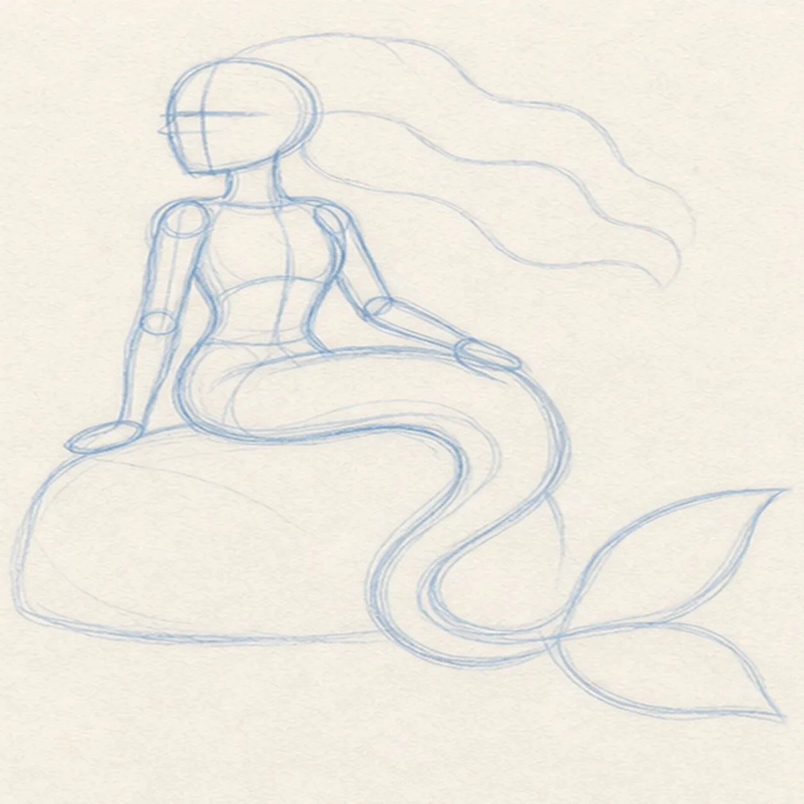
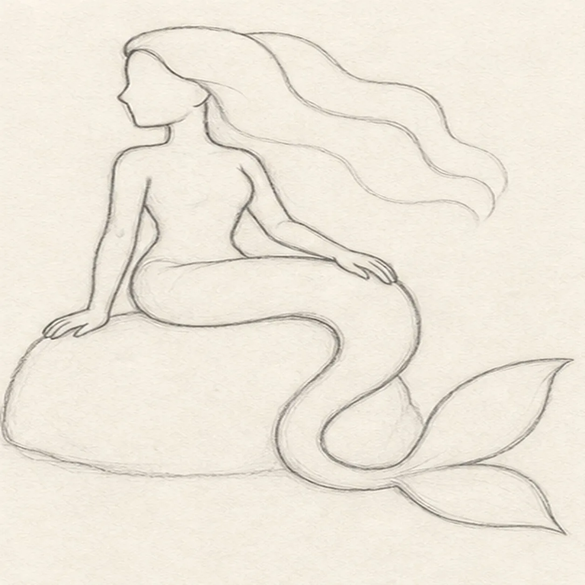
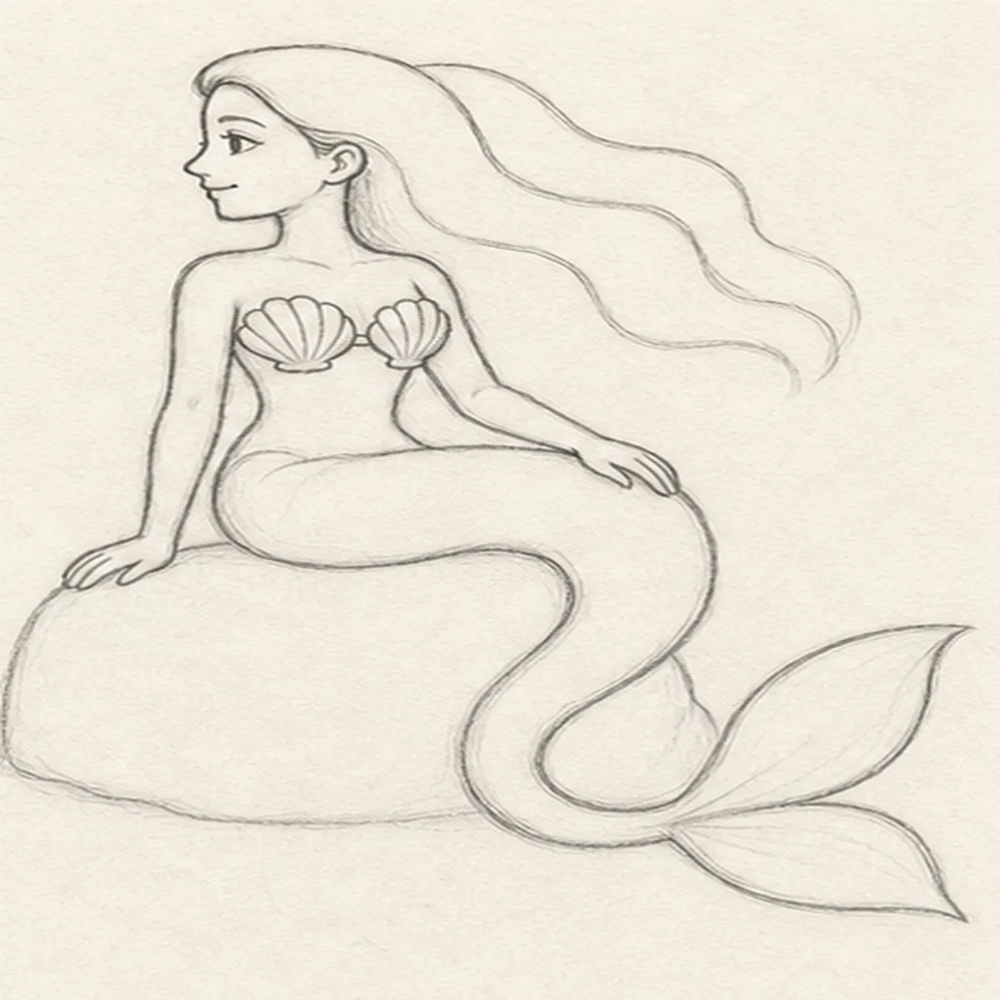
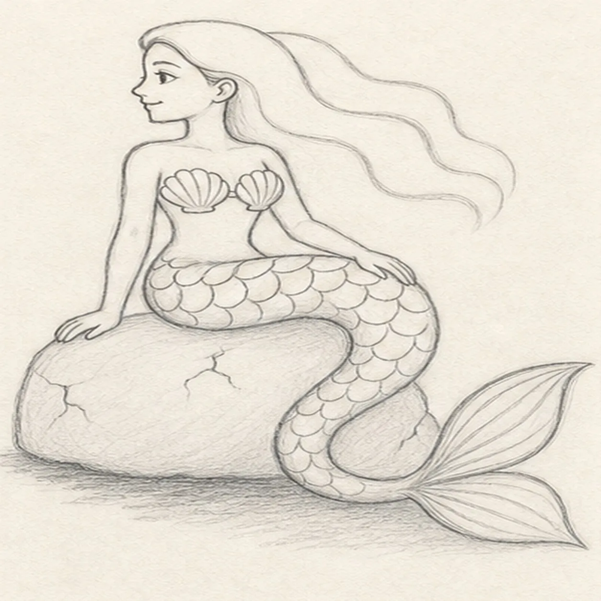
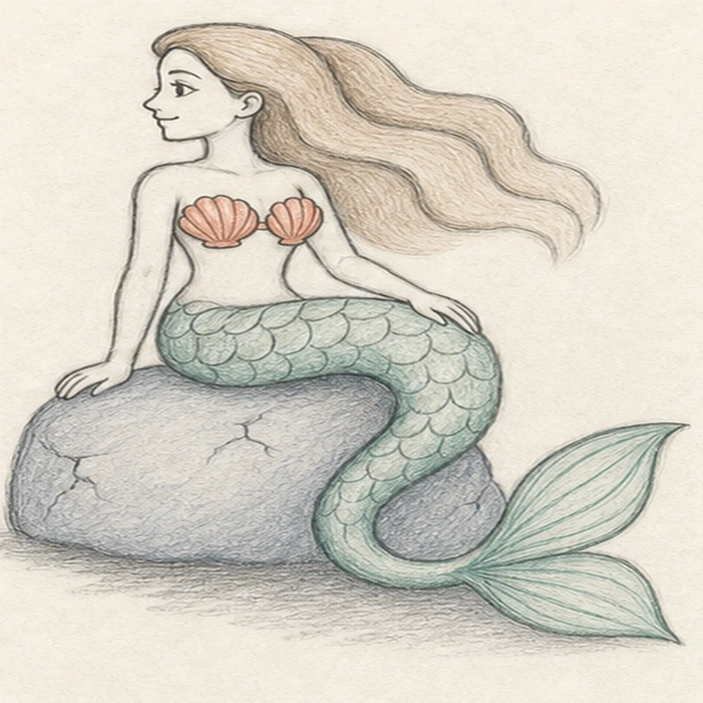

From the archive
Let's draw a mermaid seated on a rock
Treat this as one small practice round: build the subject lightly, notice the shapes, then darken only the lines that help the finished sketch.
-
01

Place the mermaid gesture
Draw a pale left-facing head oval and face axis, ribcage and hip masses, upright spine, two arm routes with hand reserves, one long S-curved tail route ending in a two-lobed fin envelope, a broad hair reserve, and a low rock footprint.
Sketch tip: Ghost the tail's long S-curve two or three times before touching down. Reserve the rock and hair at the same time so the pose fills the page without crowding the fin.
-
02

Shape the seated silhouette
Wrap the guides with the profile head, neck, torso, two visible arms and simplified hands, hips flowing into the long tail, two-lobed fin, broad hair mass, and low rounded rock.
Sketch tip: Rotate the page for the back, belly, and tail contours, then pull each in one relaxed pass. Break hidden body lines cleanly where the seated figure overlaps the rock.
-
03

Set the face and flowing hair
Add one visible eye and eyebrow, the profile nose and closed smile, one ear, three broad flowing wave contours through the hair, and a simple top made from two shell-shaped cups.
Sketch tip: Keep the eye close to the face axis and use the brow to carry the expression. Divide the hair into three large waves before considering any smaller strands.
-
04

Pattern the tail and rock
Add a large overlapping scale pattern across the established tail, directional rays inside both fin lobes, restrained short cracks on the rock, and one broken graphite shadow beneath it.
Sketch tip: Start the scales at the hip with a staggered row, then follow the tail's curve and let the pattern narrow naturally. Leave open paper between the rock cracks so the surface stays quiet.
-
05

Add sea color and soft value
Model the established figure with graphite, add sea-green pencil to the tail and fin, muted coral to the shell top, blue gray to the rock, warm brown to the hair, and preserve paper highlights.
Sketch tip: Pull colored-pencil strokes with each form instead of filling flat areas. Keep the tail darker along its lower edge and leave pale channels through the hair and fin.
-
06
Settle the mermaid finish
Strengthen the keeper contours and clarify the established profile, two arms and hands, three broad hair waves, shell top, tail, overlapping scale pattern, two-lobed fin, rock cracks, restrained colors, highlights, and broken shadow.
Sketch tip: Trace the tail from hip to both fin lobes, check that both hands still read, then stop while the pencil grain remains visible. Your hair, colors, and scale rhythm can vary while the same seated construction stays useful.